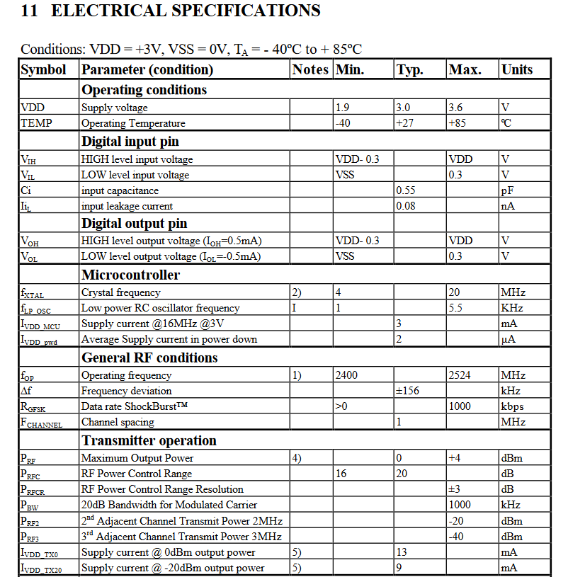
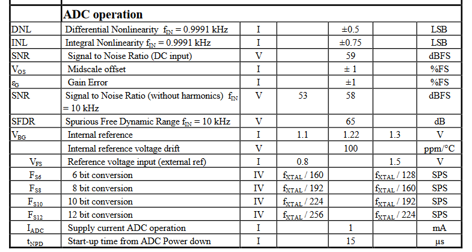

This is the overall operation.
Internals of the MCU/Radio Transceiver/ADC combo as well as the ADNS optical sensor
The ADNS-5030 itself is not only an Image Acquisition System (IAS), but it also containes a DSP and 4 wire serial port.
Images are aquired by the IAS then the DSP determines the direction and distance of motion.
The signal is then sent to the nRF24E1 which converts the change in x/y information into mouse position information then sends this to the PC.
FULL ELECTRICAL CHARACTERISTICS:
 OPERATING CONDITIONS OF NOTE:
Operating Voltage: 3V
Operating Current (MCU): 3mA
Operating Current (Radio T.): 13mA
Operating Current (ADC): 1mA
Operating Current (Optical Sensor Inc LED): 15mA
Operating Frequncy: 16MHz
Internal Reference Voltage (ADC): 1.22V
POWER CONSUMPTION:
This device uses 2 - 1.5V AAA Alkaline batteries
Typical Capacity of a Alkaline AAA is about 1000mAh
As we can see, the total current draw of all the components is about 33mA. Thus with a usage of ~33mAh, we get 60.6 hours of continous usage, worst case.